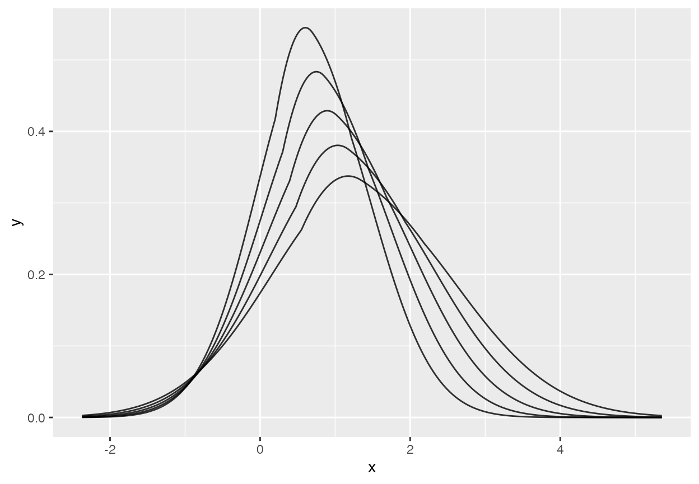

using-quantspace.RmdThe quantspace library implements a flexible approach to quantile estimation which guarentees that quantiles do not cross at any point in the data. This will walk through the basic usage of quantspace, how to change algorithms, use different standard error methods, handle plotting, prediction, and interpreting coefficients.
To start, we load the library:
library(quantspace)
#> Loaded quantspace v0.1, using 3 cores for bootstrap sampling (see ?getCores).
#> Bug reports: github.com/be-green/quantspace/issues
set.seed(1999)To get a sense of how quantspace works, I’ll use some simulated data.
# Design Matrix
X <- matrix(rnorm(10000), ncol = 2)
betas <- c(-1, 2)
# make the scale also depend on X
scale_betas <- c(0.25, 1.5)
err <- exp(X %*% scale_betas) * rnorm(nrow(X))
y <- X %*% betas + errThis gives us some fatter tails and some dependence in the tails. Let’s look at y in order to get a sense.
library(ggplot2)
# what does the tail dependence do relative to normal errors
y_no_err_dep <- X %*% betas + rnorm(nrow(X))
qplot(y_no_err_dep) + ggtitle("Y with normal errors")
qplot(y) + ggtitle("Y with tail dependence")
#> `stat_bin()` using `bins = 30`. Pick better value with `binwidth`.qs functionLet’s try to get at that info! The main function which estimates models via quantile spacings is the qs function. Let’s check out an example:
regression_data <- data.frame(y = y, X)
# fits a quantile spacings model
# these quantiles are set as the default argument, and you
# can change them as you need to
fit <- qs(y ~ X1 + X2, data = regression_data,
quantiles = c(0.1, 0.25, 0.5, 0.75,0.9),
baseline_quantile = 0.5,
algorithm = "sfn")
summary(fit)
#> Baseline Quantile Coefficients:
#> Variable Quantile Coefficient SE
#> 1 (Intercept) 0.5 0.01095 0.020610
#> 2 X1 0.5 -0.99270 0.007648
#> 3 X2 0.5 2.00300 0.012160
#>
#> Quantile Spacing Coefficients:
#> Variable Quantile Coefficient Standard.Error
#> 1 (Intercept) 0.10 -0.5139 0.03463
#> 2 X1 0.10 0.2680 0.03253
#> 3 X2 0.10 1.4440 0.03262
#> 4 (Intercept) 0.25 -0.4443 0.02520
#> 5 X1 0.25 0.2794 0.02471
#> 6 X2 0.25 1.4690 0.02420
#> 7 (Intercept) 0.75 -0.4065 0.02210
#> 8 X1 0.75 0.2393 0.02253
#> 9 X2 0.75 1.5080 0.02521
#> 10 (Intercept) 0.90 -0.4618 0.02932
#> 11 X1 0.90 0.2455 0.03139
#> 12 X2 0.90 1.4790 0.03674
#>
#> Quantile Psuedo-R2:
#> 0.1: 0.4459
#> 0.25: 0.4446
#> 0.5: 0.2872
#> 0.75: 0.4661
#> 0.9: 0.45We’ve already made a couple choices here. First, we set the regression formula, second we specified the data. The ones that are a bit stranger are the quantiles and baseline_quantile arguments. Because the quantile spacings model is a joint model, we need to estimate everything recursively.
To get the 0.25 spacing coefficient, we take the predicted median value, \(\hat{y}_{med}\), and calculate \(r = y - \hat{y}_{med}\). For the positive residuals, we then take log(r) as the outcome variable, and estimate a median regression. For negative residuals, we do the same thing but with log(-r). This guarentees that the quantiles fitted by the model don’t ever cross.
The baseline_quantile is the quantile that we take spacings relative to. We don’t recommend changing this away from the median, which is the default. The quantiles argument is simply the complete list of quantile effects you want to estimate.
The algorithm argument is the algorithm you want to use in order to fit the quantile regression at each stage. This will be covered in more detail later, but the options include all the algorithms implemented in the quantreg package (e.g. “br”, “pfn”, “sfn”) as well as “agd”, which implements accelerated gradient descent over a semi-smooth approximation of the quantile loss function, and “lasso” and “post-lasso”, which are penalized variants of the other algorithms. There will be more to come in the future, and there is an interface for adding your own algorithm which will be documented in a separate vignette. By default, this is “sfn”, which is the fastest method available in the quantreg package for most problems. For large-scale problems, you may see speed gains from using the “agd” algorithm.
Note (June 7, 2021): the interface to the penalized regression variants is likely to change in the near future. Treat as experimental.
There are also s3 methods common to other packages available for basic operations. These include coef and coefficients, which return a matrix of coefficients, predict which returns fitted quantiles (or out of sample predictions via the argument newdata), summary which summarizes the fitted model, and resid and residuals which return model residuals.
# get coefficients
betas <- coef(fit)
# get residuals
res <- resid(fit)
# in sample predictions
pred <- predict(fit)
# out of sample predictions
oos <- data.frame(matrix(rnorm(200), ncol = 2))
pred_oos <- predict(fit, newdata = oos)The qs function also has some control parameters you can see described in more detail on the help page for the function (?qs), including parallel, which determines whether bootstrap draws should be parallelized, calc_se which determines whether to calculate standard errors, and weights, which allows you run a weighted regression.
The more sophisticated controls for the quantile spacings model and standard errors are specified via the control and std_err_control arguments. Each of these is specified via calls to the qs_control() and se_control() functions. For details, you can always check the help pages (e.g. ?qs_control).
The qs_control function allows you to set small, the level at which values are treated as zero, trunc, whether to truncate residuals below the value of small, lambda, an optional penalty parameter for use with the lasso algorithm, output_quantiles, which controls whether to save fitted quantiles, and calc_avg_me, which determines whether to calculate average marginal effects. Perhaps with the exception of lambda, none of these need to be changed very often (if at all).
The se_control function allows the user to specify various aspects of the bootstrapping and subsampling used to calculate standard errors. By default, standard errors are calculated via subsampling, with 100 draws. There are several available algorithms for computing standard errors, all based on empirical reweighting and bootstrapping. Setting se_control(se_method = "weighted_bootstrap") will randomly re-weight data based on random exponential weights drawn with rate parameter 1. Using "subsample", which is the default, will construct subsamples of the data (without replacement. The size of these subsamples is set via subsample_percent. Using "bootstrap" will use data sample with replacement the same size as the original sample. To truly customize this, you can set this argument to "rq_sample".
The other se_control parameters allow you to customize the subsampling percent, the number of bootstraps (num_bs), whether to use random exponential weights (draw_weights), whether to sample with or without replacement or to leave the sample alone (sampling_method), and the size of the data at which point the bootstrapping/subsamplign will be done in parallel (parallel_thresh).
In the future, the package may add closed-form standard errors via the delta method, but as of now all standard error methods are based on bootstrapping and subsampling.
The other thing that the quantspace package is very useful for is modeling the full distribution of outcomes. To do this, it contains routines which efficiently interpolate the fitted quantiles via cubic splines. Modeling the log distance away from the median, rather than treating each quantile independently, prevents the fitted quantiles from crossing, which means that we can always recover a valid density by interpolating between them.
Right now this is done with cubic splines, which can (very occasionally) go negative, which would not imply a valid CDF. If that happens, it’s probably a sign that this is a very poor model for your problem or that you have data which is quite small.
So how do we do this? Let’s take our fit from above and interpolate it. Because our model is non-linear, the distance between quantiles will vary with the data. By default, the distributional_effects function performs this interpolation at the average level of the data, returning the pdf, cdf, quantile function, and a random number generator for the fitted density.
d <- distributional_effects(fit)
list(
# evaluate the density at 0
pdf = d$pdf(0),
# evaluate the cdf at 0
cdf = d$cdf(0),
# return the fitted median
quantile = d$q(0.5),
# generate 10 random numbers from fitted density
d$r(10)
)
#> $pdf
#> [1] 0.1398311
#>
#> $cdf
#> [1] 0.49907
#>
#> $quantile
#> [1] 0.006652383
#>
#> [[4]]
#> [1] -0.01780072 1.89721126 1.44911488 -2.33121367 -3.96389870 -3.56534170
#> [7] -4.16744913 -5.33487463 1.78081162 -3.02092618We can also do this for various levels of the data. Let’s see how these change as we move up in the first dimension of our X variable.
X_levels <- data.frame(quantiles = c(0, 0.25, 0.5, 0.75, 1),
X1 = mean(X[1,]),
X2 = quantile(X[2,]))
# interpolate fitted quantiles at all levels of X1
vary_x2 <- distributional_effects(fit, newdata = X_levels, tails = "gaussian")
plot(vary_x2, tail_level = 0.001)
The marginal effects functionality in the quantspace package is baked into the function marginal_effects. This can be used to compute average marginal effects, marginal effects at the average, or marginal effects across different levels of a variable (holding the other variables constant at the sample average).
# average marginal effects
marginal_effects(fit, type = "ame")
#> Average Marginal Effects
#> X1:
#> 0.1 0.25 0.5 0.75 0.9
#> -1.249838 -1.242354 -0.9927048 -0.2009702 4.652145
#> X2:
#> 0.1 0.25 0.5 0.75 0.9
#> 0.6500988 0.6904133 2.003003 6.991483 36.22921This computes marginal effects at the sample average.
# marginal effects at the average
marginal_effects(fit, type = "mea")
#> Marginal Effects at the Average
#> X1:
#> 0.1 0.25 0.5 0.75 0.9
#> -1.333568 -1.172606 -0.9927048 -0.8327413 -0.6774448
#> X2:
#> 0.1 0.25 0.5 0.75 0.9
#> 0.190075 1.057131 2.003003 3.010885 3.946473This computes marginal effects across different levels of each variable, holding all others in the model fixed.
# marginal effects for varying levels of each variable
marginal_effects(fit, type = "varying")
#> Varying Over Levels
#> X1:
#> X1 0.1 0.25 0.5 0.75 0.9
#> -2.26103948 -1.005308 -0.9991773 -0.9927048 -0.9874306 -0.98196734
#> -1.93044557 -1.013104 -1.0032235 -0.9927048 -0.9840232 -0.97511530
#> -1.59985165 -1.025723 -1.0097991 -0.9927048 -0.9784145 -0.96389004
#> -1.26925774 -1.046150 -1.0204852 -0.9927048 -0.9691824 -0.94549999
#> -0.93866382 -1.079215 -1.0378515 -0.9927048 -0.9539860 -0.91537137
#> -0.60806990 -1.132738 -1.0660740 -0.9927048 -0.9289720 -0.86601022
#> -0.27747599 -1.219379 -1.1119392 -0.9927048 -0.8877978 -0.78513768
#> 0.05311793 -1.359634 -1.1864760 -0.9927048 -0.8200235 -0.65263439
#> 0.38371185 -1.586681 -1.3076079 -0.9927048 -0.7084640 -0.43553333
#> 0.71430576 -1.954237 -1.5044629 -0.9927048 -0.5248324 -0.07981439
#> 1.04489968 -2.549265 -1.8243776 -0.9927048 -0.2225670 0.50304230
#> 1.37549360 -3.512559 -2.3442802 -0.9927048 0.2749748 1.45809273
#> 1.70608751 -5.072068 -3.1891888 -0.9927048 1.0939497 3.02304309
#> 2.03668143 -7.596852 -4.5622741 -0.9927048 2.4420171 5.58743592
#> X2:
#> X2 0.1 0.25 0.5 0.75 0.9
#> -2.28629570 1.9382666 1.9701582 2.003003 2.035037 2.066789
#> -1.95661863 1.8983672 1.9496978 2.003003 2.055660 2.107362
#> -1.62694157 1.8338733 1.9164918 2.003003 2.089559 2.173745
#> -1.29726450 1.7296228 1.8626004 2.003003 2.145281 2.282363
#> -0.96758743 1.5611053 1.7751379 2.003003 2.236874 2.460086
#> -0.63791037 1.2886979 1.6331912 2.003003 2.387434 2.750891
#> -0.30823330 0.8483451 1.4028201 2.003003 2.634918 3.226738
#> 0.02144376 0.1364929 1.0289412 2.003003 3.041726 4.005390
#> 0.35112083 -1.0142714 0.4221575 2.003003 3.710423 5.279565
#> 0.68079789 -2.8746032 -0.5626169 2.003003 4.809607 7.364653
#> 1.01047496 -5.8820771 -2.1608484 2.003003 6.616412 10.776812
#> 1.34015202 -10.7441420 -4.7546848 2.003003 9.586382 16.360791
#> 1.66982909 -18.6045859 -8.9643299 2.003003 14.468326 25.499146
#> 1.99950615 -31.3126920 -15.7963382 2.003003 22.493113 40.454678You can also specify a single variable of interest like so.
# marginal effects at the average, just X2
marginal_effects(fit, type = "mea", variable = "X2")
#> Marginal Effects at the Average
#> X2:
#> 0.1 0.25 0.5 0.75 0.9
#> 0.190075 1.057131 2.003003 3.010885 3.946473